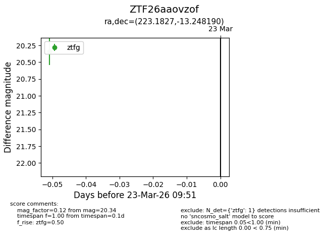
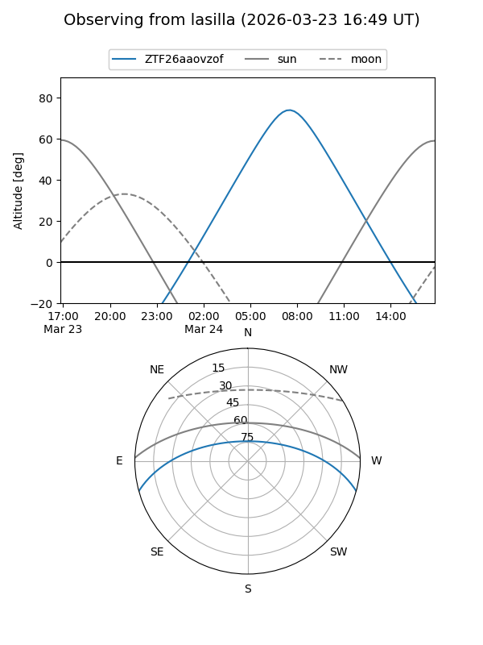
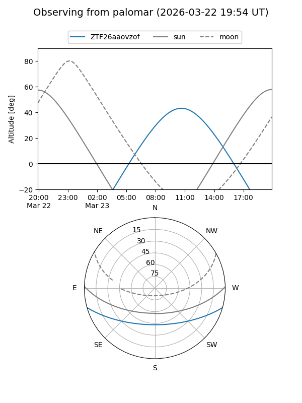

ZTF26aaovzof
Target ZTF26aaovzof at 2026-03-23 09:53
Aliases and brokers:
FINK: link
Lasair: link
ALeRCE: link
alt names
ZTF26aaovzof (ztf,fink_ztf)
Coordinates:
equatorial (ra, dec) = 223.1827,-13.24819
equatorial (HMS+DMS) = 14:52:43.86,-13:14:53.49
galactic (l, b) = (342.8642,+40.03733)
Flags:
Photometry:
last ztfg=20.34
1 ztfg detections
Lightcurve

Visibility


Additional plots